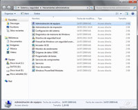

Dentro del grupo de primer nivel Sistema y seguridad se hallan las Herramientas administrativas. Otra forma de acceder a éstas es a través de Inicio > Todos los programas > Herramientas administrativas.
{kind=link}
Las herramientas administrativas principales son:
{kind=link}
- Administración de equipos: Permite administrar equipos locales o remotos con una sola herramienta de escritorio consolidada. Mediante Administración de equipos se pueden realizar numerosas tareas, como supervisar eventos del sistema, configurar discos duros y administrar el rendimiento del sistema.
- Administración de impresión: Permite administrar impresoras y servidores de impresión en una red y realizar otras tareas administrativas.
- Configuración del sistema: Permite identificar problemas que puedan estar impidiendo la correcta ejecución de Windows.
- Diagnostico de memoria de Windows: Permite comprobar si la memoria funciona correctamente.
- Directiva de seguridad local: Permite consultar y editar la configuración de seguridad de directiva de grupo.
- Firewalls de Windows con seguridad avanzada: Permite configurar opciones avanzadas del firewall en el equipo propio y en otros equipos remotos de la misma red.
- Iniciador iSCSI: Permite configurar conexiones avanzadas entre dispositivos de almacenamiento en una red.
- Monitor de rendimiento: Permite consultar información avanzada del sistema acerca de la unidad central de procesamiento (CPU), la memoria, el disco duro y el rendimiento de la red.
- Orígenes de datos (ODBC): Permite usar la conectividad abierta de bases de datos (OBDC) para mover datos de un tipo de base de datos (un origen de datos) a otro.
- Programador de tareas: Permite programar la ejecución automática de aplicaciones u otras tareas.
- Servicios de componentes: Permite configurar y administrar los componentes del Modelo de objetos de componentes (COM). Los Servicios de Componentes están diseñados para ser usados por programadores y administradores.
- Servicios: Permite administrar los diversos servicios que se ejecutan en segundo plano en el equipo.
- Visor de eventos: Permite consultar información sobre eventos importantes (por ejemplo, cuando se inicia o se cierra una aplicación, o un error de seguridad), que se guardan en los registros de los eventos.
En esta unidad estudiaremos con más detalle algunas de estas herramientas, como por ejemplo, el Administrador de equipos, las Directivas de seguridad local, el Monitor de rendimiento, el Programador de tareas, la herramienta Servicios, etc.